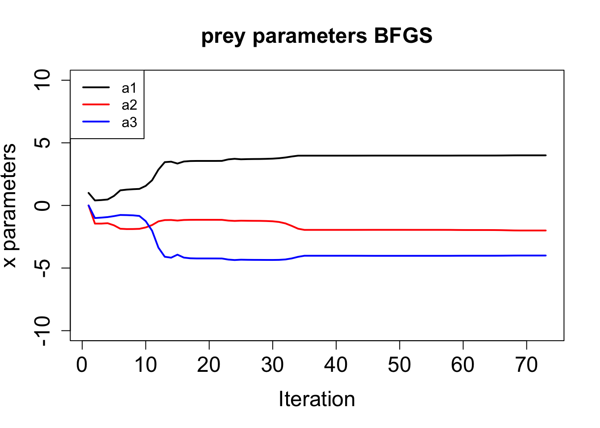

dt <- 0.001
a <- c(4, -2, -4, -6, 2, 4)
x1 <- 1
y1 <- 1
nmax <- 15001
x <- rep(0, nmax)
y <- rep(0, nmax)
x[1] <- x1
y[1] <- y1
for (n in 1:(nmax-1)) {
x[n+1] <- x[n] + dt * (x[n] * (a[1] + a[2] * x[n] + a[3] * y[n]))
y[n+1] <- y[n] + dt * (y[n] * (a[4] + a[5] * y[n] + a[6] * x[n]))
}捕食・被食モデル
model
DA
随伴モデルの作成
捕食・被食関係にある2種の個体群の集団密度の時間変動を表す数理モデルは、Lotka–Volterraモデルとして知られている。 化学反応 (Lotka 1920)や魚種交替のモデル (Volterra 1926) として提案され、NPZモデル (Franks et al. 1986) の基礎となっているだけでなく、積雲対流の自己組織化のモデル (Nober and Graf 2005) にも応用されている。 ここでは、Lawson et al. (1995) に基づいて、捕食・被食モデルを作成し、その随伴を作成する。
支配方程式系
捕食・被食モデルを次の二元連立非線型常微分方程式系で表す。
\[ \begin{aligned} \frac{\mathrm{d}x}{\mathrm{d}t} &= x(a_1 + a_2x + a_3y) \\ \frac{\mathrm{d}y}{\mathrm{d}t} &= y(a_4 + a_5y + a_6x) \end{aligned} \]
\(a_1, a_2, a_3\) 及 び\(a_4, a_5, a_6\) は、それぞれ被食者と捕食者の比成長率 \(\mathrm{d}^{-1}\) 、依存性 \((\text{Number}\,\mathrm{m}^{-2})^{-1}\mathrm{d}^{-1}\) 、減少率 \((\text{Number}\,\mathrm{m}^{-2})^{-1}\mathrm{d}^{-1}\) を表し、 \(x, y\) はそれぞれ被食者と捕食者の個体数 \(\text{Number}\,\mathrm{m}^{-2}\) を表す。
順行モデル
早速Rで実装して、15日間の時間変化を計算してみる。
まず、位相平面で捕食者と被食者の個体数の変化を描画する。
plot(x, y, type = "l", lwd = 2,
xlab = "Prey (x)", ylab = "Predator (y)",
cex.lab = 1.5, cex.axis = 1.5,
xlim = c(0, 2), ylim = c(0, 2))
x.nc <- seq(0, 2, length.out = 100)
points(x1, y1, pch = 4, lwd = 2, cex = 2)
lines(x.nc, -(a[1] + a[2] * x.nc) / a[3], lwd = 2, lty = 2, col = "red")
lines(x.nc, -(a[4] + a[6] * x.nc) / a[5], lwd = 2, lty = 2, col = "blue")
legend("topright", legend = c("x vs y","dx/dt = 0", "dy/dt = 0"),
col = c("black","red", "blue"), lwd = 2, lty = c(1, 2, 2), cex = 1.5)\(\times\)が初期位置で、個体数の変化は曲線で表されている。 二つの破線は、捕食者（青）と被食者（赤）の個体数がそれぞれ変化しない定常状態を表している。
次に、時間変化を描画する。
plot(seq(0, 15, by = dt), x, type = "l", lwd = 2, col = "red",
xlab = "Time (days)", ylab = "Density",
cex.lab = 1.5, cex.axis = 1.5,
xlim = c(0, 15), ylim = c(0, 2))
lines(seq(0, 15, by = dt), y, lwd = 2, col = "blue")
legend("topright", legend = c("Prey (x)", "Predator (y)"),
col = c("red", "blue"), lwd = 2, cex = 1.5)随伴法
初期値やパラメタなど制御変数を\(\mathbf{x} = (x_1, \dots, x_m)^\mathrm{T}\)とし、状態変数を\(\mathbf{z}= (z_1, \dots, z_N)^\mathrm{T}\)とする。 捕食・被食モデルの場合は\(\mathbf{x} = (x_1, y_1, a_1, a_2, a_3, a_4, a_5, a_6)^\mathrm{T}\)である。 状態変数は\((x(t), y(t))\)と二要素あるが、ここでは各時刻\(n\)ではスカラー\(z_n\)とする。 随伴モデルの作成の際は、最後の時刻の状態変数\(z_{N+1}\)をコスト函数\(z_{N+1} = J(\mathbf{x}, z_1, \dots, z_{N})\)とする。 モデルを\(f_n\)で表すと、順行計算は次のように表される。
\[ z_1 = f_1(\mathbf{x}),\;z_n = f_n(\mathbf{x}, z_1, \dots, z_{n-1}),\;n = 2, \dots, N + 1 \tag{1}\]
ここで、コスト函数の入力ベクトル\(\mathbf{x}\)に関する微分の計算を容易にするため、Lagrangeの未定乗数法を用いる。
\[ L(\mathbf{x}, \mathbf{z}, \lambda) = J(\mathbf{x}, z_1, \dots, z_{N}) - \lambda_1(z_1 - f_1(\mathbf{x})) - \sum_{n=2}^{N+1} \lambda_n (z_n - f_n(\mathbf{x}, z_1, \dots, z_{n-1})) \tag{2}\]
ここで\(\boldsymbol\lambda = (\lambda_1,\dots,\lambda_{N+1})^\mathrm{T}\)はLagrangeの未定乗数である。 Lagrange函数の鞍点は、\(\mathbf{x},\mathbf{z}, \boldsymbol\lambda\)空間で\(L\)の微分が同時に0に一点である。 鞍点では、\(\partial L/\partial \boldsymbol\lambda\)から支配方程式(Equation 1) が得られる。
また、\(\partial L/\partial \mathbf{z}\)から随伴方程式 \[ \lambda_{N+1} = \frac{\partial J}{\partial z_{N+1}},\;\lambda_n = \frac{\partial J}{\partial z_n} + \sum_{i=n+1}^{N+1} \frac{\partial f_i}{\partial z_n}\lambda_{i} ,\;n = N, \dots, 1 \tag{3}\] が得られる。
さらに、\(\partial L/\partial \mathbf{x}\)からコスト函数の入力に対する微分、
\[ \frac{\partial L}{\partial x_k} = \sum_{i=1}^{N+1} \frac{\partial f_i}{\partial x_k}\lambda_i\;k = 1, \dots, m \] が得られる。
随伴モデルの作成
方程式系の随伴の作り方には、大別して二つの方法がある。
- 支配方程式系に随伴函数を掛けて、部分積分をして、随伴方程式を求めてから離散化して随伴モデルを作る。
- 支配方程式系を離散化し、その接線型モデルを作り、接線型モデルを元に随伴モデルを作成する。
ここでは、これらとは異なり、離散化された順行モデルのプログラムの各行から随伴モデルを作成する。
順行プログラムの一行は \[ Y = G(X, \dots) \] と表される。 \(Y\)は右辺により再定義される従属変数である。 次のステップの値など中間変数を\(Z\)で表すと、順行モデルの典型的な二行は \[ \begin{aligned} Y &= G(X, \dots) \\ Z &= F(X, Y, \dots) \end{aligned} \] となる。 この例におけるLagrange函数は次のように書ける。
\[ L = \dots -\lambda_Y(Y - G(X, \dots)) - \lambda_Z(Z - F(X, Y, \dots)) + \dots \tag{4}\]
(Equation 2)のように、未定乗数は状態\(z_k\)の一つに対して一つずつ用意する。 Lagrange函数を明示的に作る必要はないが、コードに基づくLagrange函数とLagrange函数 (Equation 2) との対応をつけるために、その形を示した。
\(Y\)についての微分が0となることから
\[ \frac{\partial L}{\partial Y} = -\lambda_Y + \lambda_Z\frac{\partial F}{\partial Y} + \dots = 0 \] つまり
\[ \lambda_Y = \lambda_Z\frac{\partial F}{\partial Y} + \dots \] となる。 これらの項は、右辺に\(Y\)が現れるところで計算し積算する必要がある。
\[ \lambda_Y = \lambda_Y + \lambda_Z\frac{\partial F}{\partial Y} \] Lagrangeの未定乗数は積算する前に、0に初期化する必要があることに注意。
同様に\(X\)に関する微分から
\[ \lambda_X = \lambda_X + \lambda_Z\frac{\partial F}{\partial X} \]
が得られる。
forward <- function(dt, a, x1, y1, nmax) {
x <- rep(0, nmax)
y <- rep(0, nmax)
x[1] <- x1
y[1] <- y1
for (n in 1:(nmax-1)) {
x[n+1] <- x[n] + dt * (x[n] * (a[1] + a[2] * x[n] + a[3] * y[n]))
y[n+1] <- y[n] + dt * (y[n] * (a[4] + a[5] * y[n] + a[6] * x[n]))
}
list(x = x, y = y)
}
adjoint <- function(dt, a, x, y, xo, yo, tobs) {
nmax <- length(x)
aa <- rep(0, length(a))
ax <- rep(0, nmax)
ay <- rep(0, nmax)
for (n in (nmax-1):1) {
# if (n == 1) {
# ax[2] <- ax[2] * 2
# ay[2] <- ay[2] * 2
# }
aa[6] <- aa[6] + dt * x[n] * y[n] * ay[n+1]
aa[5] <- aa[5] + dt * y[n] * y[n] * ay[n+1]
aa[4] <- aa[4] + dt * y[n] * ay[n+1]
ax[n] <- ax[n] + dt * a[6] * y[n] * ay[n+1]
ay[n] <- ay[n] + dt * a[5] * y[n] * ay[n+1]
ay[n] <- ay[n] + (1 + dt * (a[4] + a[5] * y[n] + a[6] * x[n])) * ay[n+1]
aa[3] <- aa[3] + dt * y[n] * x[n] * ax[n+1]
aa[2] <- aa[2] + dt * x[n] * x[n] * ax[n+1]
aa[1] <- aa[1] + dt * x[n] * ax[n+1]
ay[n] <- ay[n] + dt * a[3] * x[n] * ax[n+1]
ax[n] <- ax[n] + dt * a[2] * x[n] * ax[n+1]
ax[n] <- ax[n] + (1 + dt * (a[1] + a[2] * x[n] + a[3] * y[n])) * ax[n+1]
if (n %in% tobs) {
# add dJ/dx and dJ/dy
# cat("Observation at time:", n, "dx=", x[n] - xo[n], "dy", y[n] - yo[n], "\n")
ax[n] <- ax[n] + (x[n] - xo[n])
ay[n] <- ay[n] + (y[n] - yo[n])
}
# cat(n, ":", aa, ax[n], ay[n], "\n")
}
# cat("Final adjoint state:", aa, "\n")
c(aa, ax[1], ay[1])
}同化実験
まずは、順行モデルを実行して、真値を作成する。
nmax <- 501
dt <- 0.001
at <- c(4, -2, -4, -6, 2, 4)
x1 <- 1
y1 <- 1
tobs <- seq(2, nmax, by = 2)
forward.result <- forward(dt, at, x1, y1, nmax)
xt <- forward.result$x
yt <- forward.result$y真値から観測を作成する。
xo <- xt
yo <- ytcalc.cost <- function(xf, yf, xo, yo) {
0.5 * (sum((xf- xo)^2 + (yf - yo)^2))
}次に、観測値を同化して順行モデルのパラメタと初期値を推定する。
lr <- 0.001
a <- c(1, 0, 0, -1, 0, 0)
x1 <- 2
y1 <- 2
itermax <- 80
tobs <- seq(2, nmax, by = 2)
chist <- rep(0, itermax)
ghist <- rep(0, itermax)
xhist <- matrix(rep(0, 8 * itermax), nrow = 8)
for (iter in 1: itermax) {
forward.result <- forward(dt, a, x1, y1, nmax)
xf <- forward.result$x
yf <- forward.result$y
aa <- adjoint(dt, a, xf, yf, xo, yo, tobs)
ghist[iter] <- sqrt(sum(aa^2))
if (ghist[iter] < 1e-6) {
cat("Converged at iteration", iter, "with cost", chist[iter], "\n")
break
}
chist[iter] <- calc.cost(xf[tobs], yf[tobs], xo[tobs], yo[tobs])
if (chist[iter] >= chist[iter-1] && iter > 1) {
cat("Cost did not decrease at iteration", iter, "with cost", chist[iter], "\n")
break
}
xhist[, iter] <- c(a, x1, y1)
# cat("iter:", iter, "cost:", chist[iter], "|g|:", ghist[iter], "a:", a, "x1:", x1, "y1:", y1, "\n")
a <- a - lr * aa[1:6]
x1 <- x1 - lr * aa[7]
y1 <- y1 - lr * aa[8]
}plot(log10(chist[1:iter]), type = "l", lwd = 2, xlab = "Iteration", ylab = "log10 J",
cex.lab = 1.5, cex.axis = 1.5)
plot(log10(ghist[1:iter]), type = "l", lwd = 2, xlab = "Iteration", ylab = "log10|g|",
cex.lab = 1.5, cex.axis = 1.5)
plot(xhist[7,], ylim = c(0, 2), type = "l", lwd = 2, xlab = "Iteration", ylab = "Initial conditions",
cex.lab = 1.5, cex.axis = 1.5)
lines(xhist[8,], lwd = 2, col = "red")
legend("topright", legend = c("x1", "y1"),
col = c("black", "red"), lwd = 2, cex = 1.5)plot(xhist[1,], ylim = c(-10, 10), type = "l", lwd = 2, xlab = "Iteration", ylab = "x parameters",
cex.lab = 1.5, cex.axis = 1.5)
lines(xhist[2,], lwd = 2, col = "red")
lines(xhist[3,], lwd = 2, col = "blue")
legend("topright", legend = c("a1", "a2", "a3"),
col = c("black", "red", "blue"), lwd = 2, cex = 1.5)plot(xhist[4,], ylim = c(-10, 10), type = "l", lwd = 2, xlab = "Iteration", ylab = "y parameters",
cex.lab = 1.5, cex.axis = 1.5)
lines(xhist[5,], lwd = 2, col = "red")
lines(xhist[6,], lwd = 2, col = "blue")
legend("topright", legend = c("a4", "a5", "a6"),
col = c("black", "red", "blue"), lwd = 2, cex = 1.5)
References
Franks, P. J. S., J. S. Wroblewski, and G. R. Flierl, 1986: Behavior of a simple plankton model with food-level acclimation by herbivores. Marine Biology, 91, 121–129, https://doi.org/10.1007/BF00397577.
Lawson, L. M., Y. H. Spitz, E. E. Hofmann, and R. B. Long, 1995: A data assimilation technique applied to a predator-prey model. Bulletin of Mathematical Biology, 57, 593–617, https://doi.org/10.1016/S0092-8240(05)80759-1.
Lotka, A. J., 1920: Analytical note on certain rhythmic relations in organic systems. Proceedings of the National Academy of Sciences, 6, 410–415, https://doi.org/10.1073/pnas.6.7.410.
Nober, F. J., and H. F. Graf, 2005: A new convective cloud field model based on principles of self-organisation. Atmospheric Chemistry and Physics, 5, 2749–2759, https://doi.org/10.5194/acp-5-2749-2005.
Volterra, V., 1926: Fluctuations in the abundance of a species considered mathematically. Nature, 118, 558–560, https://doi.org/10.1038/118558a0.